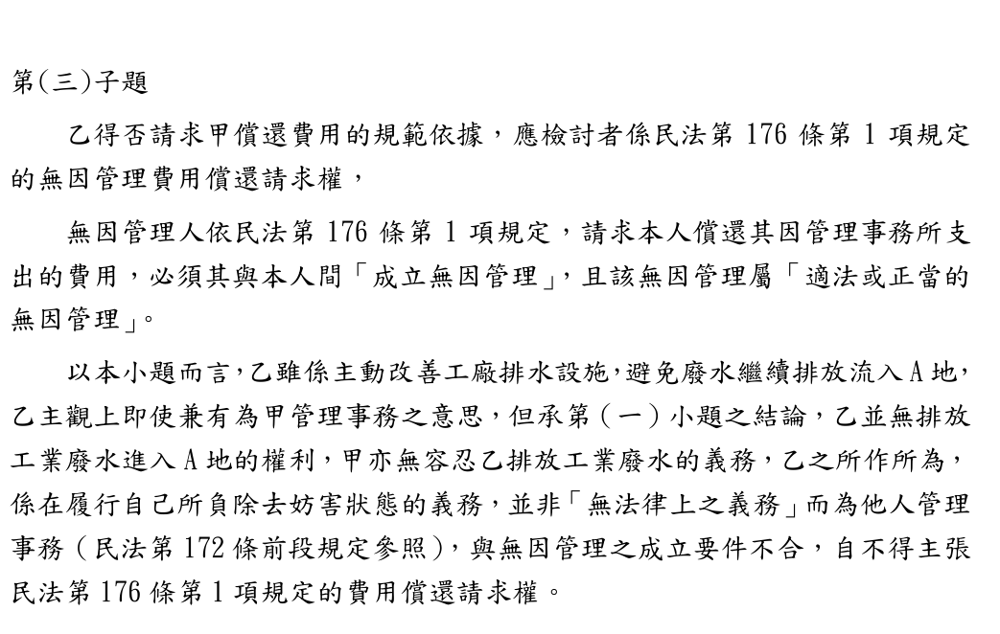
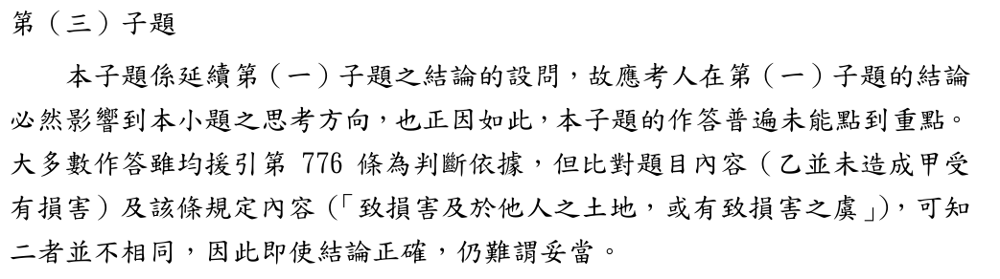

乙自己改好排水，能叫甲付錢嗎？
112年律師第二試｜民法與民事訴訟法（一）｜第一題第（三）小題（15分）
題目
這一題有三個小題。本頁只做第（三）小題，用得到的事實畫黃色底線。
- （一）甲請求乙停止排放工業廢水進入A地，有無理由？（30分）（本題講義）
- （二）甲請求丙賠償其無法繼續以A地經營養殖漁業的營業利益損失，有無理由？（30分）（本題講義）
- （三）設乙事後為預防紛爭，主動支出費用改善工廠排水設施，避免工業廢水繼續排放流入A地。乙請求甲償還其因此支出的費用，有無理由？（15分）本頁只做這一題
影片說明
影片依序示範：主播介紹、整題讀一遍並框出第（三）小題、乙關閥門後拿帳單請款、學弟學姊的垃圾與清潔費比喻、無因管理要件與本案事實、承接第（一）小題（帳單撞上「乙自己的義務」彈回）、為什麼不是第776條、三個易錯點，最後把擬答從頭看一遍。
先想清楚：乙是在幫甲，還是在做自己該做的事？
| 時間 | 發生什麼 | 法律上的意義 |
|---|---|---|
| 第（一）小題 | 乙排工業廢水進A地，甲多次異議 | 逾越公用地役的農田排水目的，甲無容忍義務；乙負除去妨害的義務（第767條第1項中段） |
| 本小題 | 乙主動花錢改善排水設施，廢水不再流入 | 履行自己的除去義務 |
| 本小題 | 乙請甲償還改善費用 | 想用無因管理（第176條第1項）請求，但要件不合 |
答題順序：兩步
閱卷委員說，本小題延續第（一）小題的結論，作答普遍沒有點到重點；大多數考生援引第776條，但題目情形和該條不同。
本題用到的條文
先看要件，再套本案事實。原文中畫底線的部分，就是本題用到的那一句。
民法第172條：無因管理的成立（第①步）
未受委任，並無義務，而為他人管理事務者，其管理應依本人明示或可得推知之意思，以有利於本人之方法為之。
| 要件 | 本案事實 | 結果 |
|---|---|---|
| 未受委任 | 乙是主動做的，甲沒有委託 | ✓ |
| 並無義務 | 乙對甲本來就負除去妨害的義務 | ✕ |
| 為他人管理事務 | 乙縱兼有為甲管理的意思，實際是在履行自己的義務 | 不必再論 |
民法第176條第1項：費用償還請求權
管理事務，利於本人，並不違反本人明示或可得推知之意思者，管理人為本人支出必要或有益之費用，或負擔債務，或受損害時，得請求本人償還其費用及自支出時起之利息，或清償其所負擔之債務，或賠償其損害。
白話先要成立無因管理，而且管理是利於本人、符合本人意思的（評分要點稱「適法或正當的無因管理」），管理人才能請本人償還費用。
本題第一關「並無義務」就不符，不成立無因管理，乙不能依這條請求。
民法第767條第1項中段：乙的義務從哪裡來
對於妨害其所有權者，得請求除去之。
本題第（一）小題已認定：A地的公用地役限於農田排水，乙排工業廢水逾越目的，甲無容忍義務，可以請求乙除去。所以「除去」是乙對甲的義務。
民法第776條：排水工作物的修繕（第②步，不適用）
土地因蓄水、排水、或引水所設之工作物、破潰、阻塞，致損害及於他人之土地，或有致損害之虞者，土地所有人應以自己之費用，為必要之修繕、疏通或預防。但其費用之負擔，另有習慣者，從其習慣。
| 要件 | 本案事實 |
|---|---|
| 工作物破潰、阻塞 | 題示未見乙的工作物破潰、阻塞 |
| 致損害及於他人土地，或有致損害之虞 | 乙未致甲受損害（閱卷委員語） |
注意題目沒有交代排水溝的狀態，只能說「題示未見」，不能寫成「並未破潰」，否則等於替題目補事實。
以上條文均依全國法規資料庫現行條文核對（2026-11-18）。
答題地圖
考選部評分要點與閱卷委員的話
| 評分要點 | 內容 |
|---|---|
| 1. 請求權基礎 | 第176條第1項無因管理費用償還請求權；須成立無因管理，且屬適法或正當的無因管理。 |
| 2. 並非無法律上義務 | 乙主觀上即使兼有為甲管理事務之意思，但承第（一）小題，乙無排放工業廢水進入A地之權利，甲無容忍義務；乙係履行自己所負除去妨害狀態之義務，並非「無法律上之義務」而為他人管理事務（第172條前段參照），不成立無因管理。 |
| 結論 | 乙不得主張第176條第1項之費用償還請求權。 |

閱卷委員的話：
- 本子題延續第（一）子題結論設問，考生在第（一）子題的結論必然影響本小題的思考方向；作答普遍未能點到重點。
- 大多數作答援引第776條，但題目（乙並未造成甲受有損害）與該條「致損害及於他人之土地，或有致損害之虞」不同，即使結論正確，仍難謂妥當。

來源：考選部〈112年司法官、律師考試第二試法律專業科目評分要點與閱卷委員的話〉民法與民事訴訟法（一）第4、5頁，已轉成圖片逐頁核對。
擬答
乙之請求無理由。
一、請求權基礎
依第176條第1項請求，須成立無因管理，即未受委任，並無義務，而為他人管理事務（第172條前段），且管理利於本人、不違反本人明示或可得推知之意思。
二、乙非「並無義務」
（一）承第（一）小題，乙排放工業廢水逾越公用地役之農田排水目的，甲無容忍義務，乙對甲負除去妨害之義務（第767條第1項中段）。
（二）乙改善排水設施，縱兼有為甲管理事務之意思，實係履行自己除去妨害之義務，不成立無因管理，不得依第176條第1項請求。
三、第776條亦不適用
該條規範排水工作物破潰、阻塞，致損害及於他人土地或有致損害之虞；題示未見乙之工作物破潰、阻塞，乙亦未致甲受損害，情形不同。
四、結論
乙請求甲償還費用無理由。
擬答309字（含標題、標點與數字，不含空白，以程式計算）。15分題目參考上限297字（120分鐘×15/150＝12分鐘，扣讀題3分鐘，9分鐘×每分鐘約33字）；略超幾個字可接受。
互動：換一個前提，乙還能請求嗎？
無因管理卡在「並無義務」。前提一變，結論就可能不同。先自己想想，再點。
後兩個分頁是本頁為了對照「並無義務」要件所做的假設與推論，不是考選部評分要點的內容。本頁推論
學說補充
尚未加入指定學說文獻。評分要點未提不當得利（第179條），本頁不另下結論。
預想易錯點
①②依閱卷委員的話整理；③是本頁合併擬答時自己犯過的錯。
| 可能的錯誤 | 應該怎麼寫 |
|---|---|
| ① 直接用第776條 | 該條要「破潰、阻塞，致損害或有損害之虞」；本題情形不同（閱卷委員點名）。 |
| ② 沒承接第（一）小題 | 先說乙本來就有除去妨害的義務，才能說不符「並無義務」（閱卷委員點名）。 |
| ③ 自己替題目補事實 | 題目沒交代排水溝狀態，寫「題示未見破潰、阻塞」，不寫「並未破潰」。 |
| 以為「乙有幫甲的意思」就成立無因管理 | 主觀上兼有為他人的意思，不影響「並無義務」要件不符。 |
延伸思考
參考資料
歡迎指正
相關連結
民法講義總覽 同一題第（一）小題：公用地役關係與妨害除去 同一題第（二）小題：營業損失與第184條第1項前段 下一題：112年第二題（一）唯一有責配偶請求離婚 GitHub 原始檔